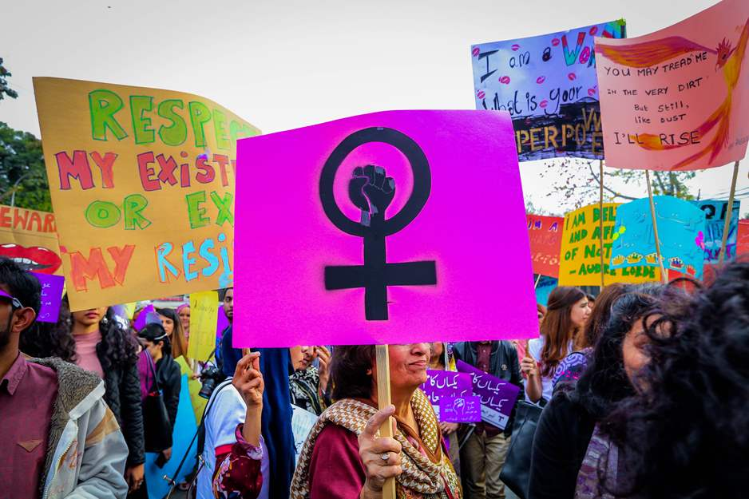
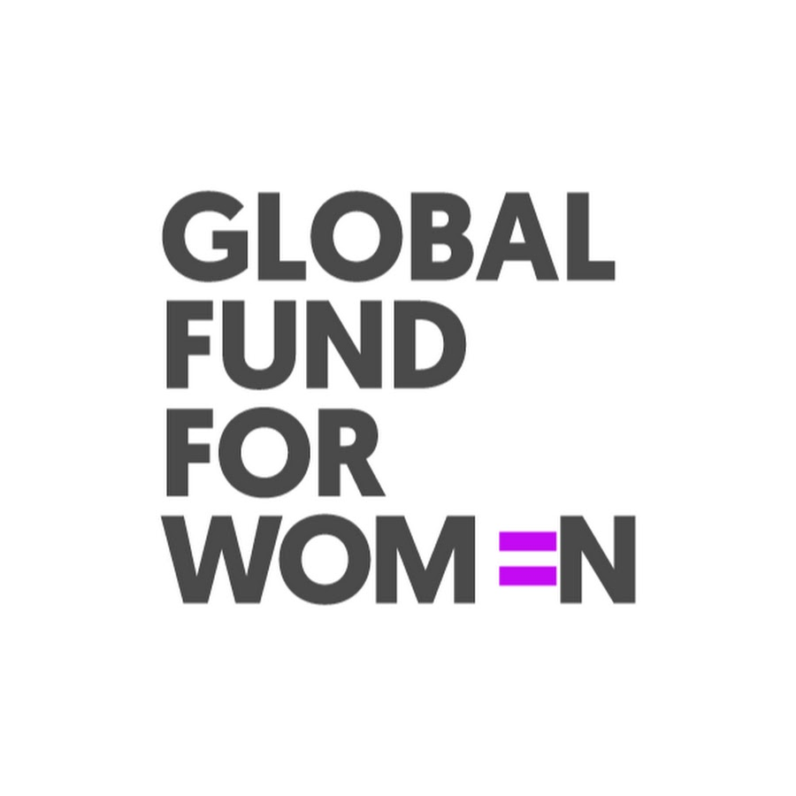

Women's Rights
Women’s rights are the fundamental human rights that were enshrined by the United Nations for every human being on the planet nearly 70 years ago. These rights include the right to live free from violence, slavery, and discrimination; to be educated; to own property; to vote; and to earn a fair and equal wage.

As the now-famous saying goes, “women’s rights are human rights.” That is to say, women are entitled to all of these rights. Yet almost everywhere around the world, women and girls are still denied them, often simply because of their gender. Winning rights for women is about more than giving opportunities to any individual woman or girl; it is also about changing how countries and communities work. It involves changing laws and policies, winning hearts and minds, and investing in strong women’s organizations and movements.
Goals
The UN Millennium Development Goals set specific targets to reduce poverty, including targets for increased gender equality in education, work, and representation. UN Women found that progress was uneven. Globally, more women are now in school and work. Yet girls are still more likely than boys to be out of school (particularly at the secondary level). And although the number of women in elected office has risen, they are still only 21.8 percent of parliamentarians. What’s more, women’s rights remain at risk in many areas not addressed in the millennium goals – from violence against women to sexual and reproductive rights. And women who are already marginalized because of their race, caste, sexuality, income, or location see the fewest gains of all.
The new Sustainable Development Goals (SDGs) hold real promise to embed advances in women’s rights, and include a specific goal (Goal 5) for gender equality. Goal 5 is more broad-based than the last gender goal and includes targets on ending gender-based violence, eliminating child marriage and female genital mutilation, and ensuring access to sexual and reproductive health. It also includes equal access to education, expanding women’s economic opportunities, and reducing the burdens of unpaid care work on women and girls. Now it is up to all of us to hold governments accountable for their commitments and make sure the goals are met. Involving women – and funding the solutions of grass-roots women’s groups – will be critical to success.
Global Fund for Women
We want every woman and girl to realize the rights that are enshrined in the Universal Declaration of Human Rights. We also stand for other rights that are vital for women’s equality. We stand for a woman’s right to decide if and when she has children, and to have high-quality health care that means she won’t die in pregnancy or during childbirth. We know female genital mutilation is a violation of girls’ rights, and must be eliminated. And we stand for the right of every woman to live equally and free from discrimination, no matter her sexuality or identity.

We support two critical documents for women’s rights that have followed the UN declaration. The Convention on the Elimination of all Forms of Discrimination Against Women (CEDAW), an international bill of rights for women, requires governments to end gender discrimination and affirms women’s rights to health services, including family planning. The Beijing Declaration and Platform for Action, adopted in 1995 at the UN’s Fourth World Conference in Beijing, was a rallying cry to embed gender equality and women’s rights in every facet of life.